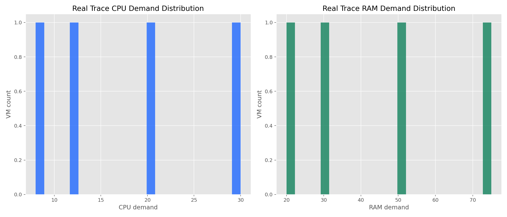
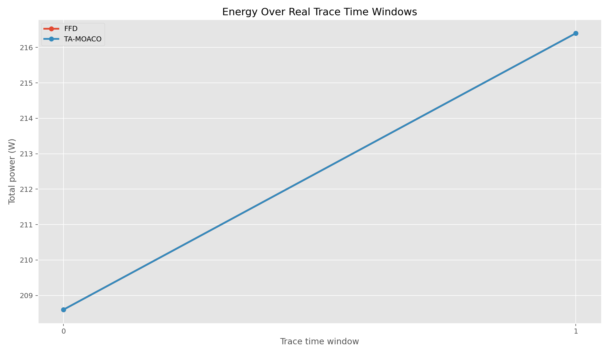
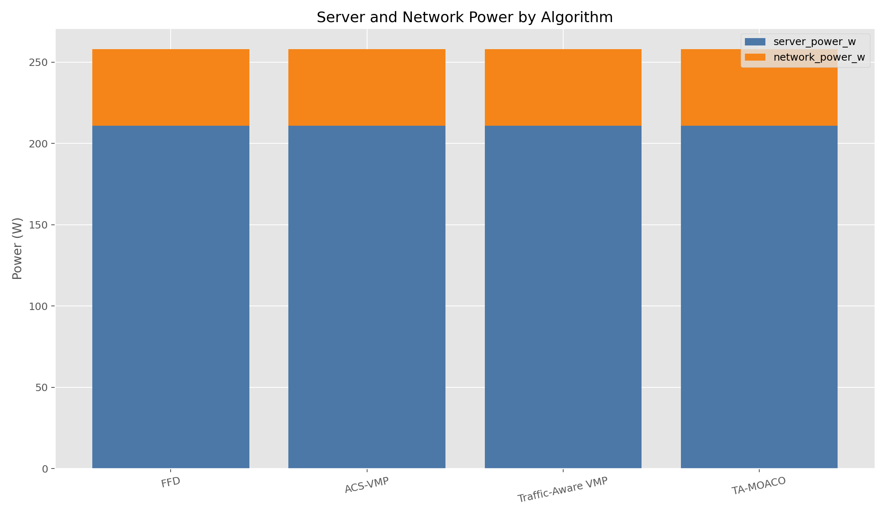
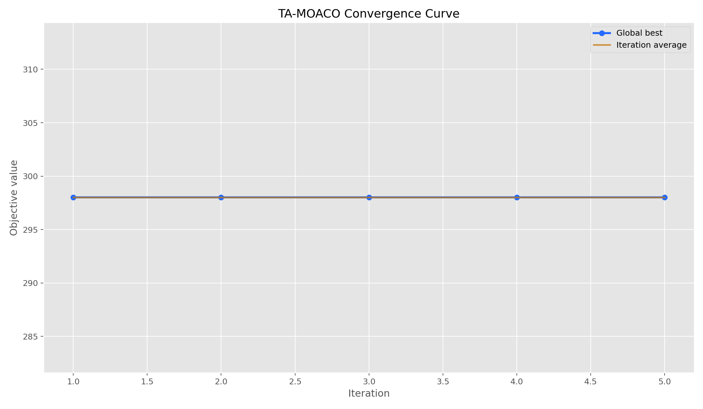
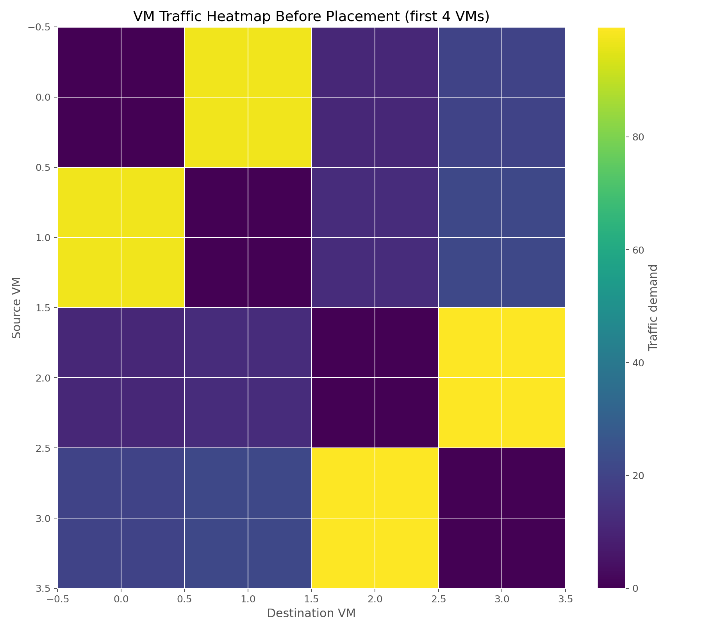
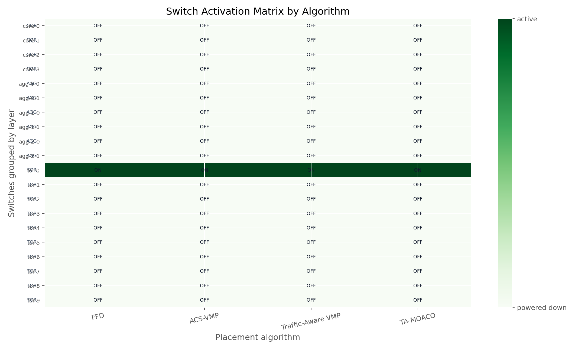
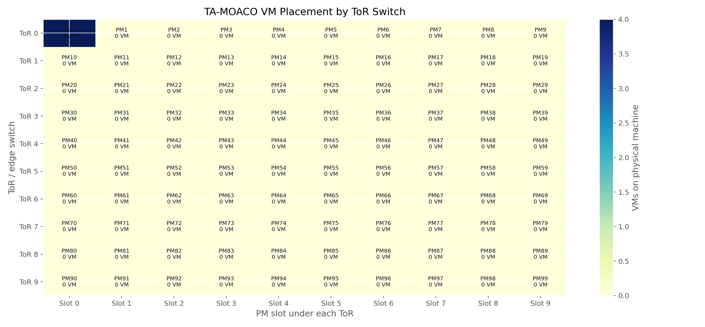

Run: run_1781473486_100pms_4vms_10ants_5iter
Scenario: medium
Recommended: FFD, total power 258.00 W, savings 0.00%.
| algorithm | active_pms | active_switches | server_power_w | network_power_w | total_power_w | energy_savings_pct | average_hop_count | sla_violations |
|---|---|---|---|---|---|---|---|---|
| FFD | 1 | 1 | 211.0 | 47.0 | 258.0 | 0.0 | 0.0 | 0 |
| ACS-VMP | 1 | 1 | 211.0 | 47.0 | 258.0 | 0.0 | 0.0 | 0 |
| Traffic-Aware VMP | 1 | 1 | 211.0 | 47.0 | 258.0 | 0.0 | 0.0 | 0 |
| TA-MOACO | 1 | 1 | 211.0 | 47.0 | 258.0 | 0.0 | 0.0 | 0 |
Source: Alibaba Cluster Trace-style CSV
Traffic method: inferred from app_id/timestamp/network hints
VMs: 4 | Applications: 2 | Time windows: 2
CPU average/peak: 17.5 / 30.0 | RAM average/peak: 43.75 / 75.0






